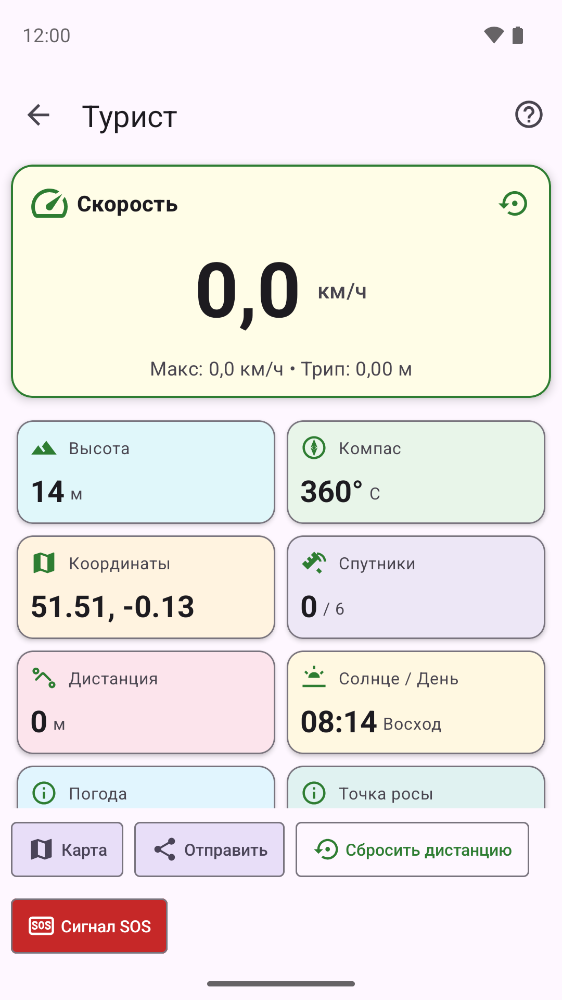
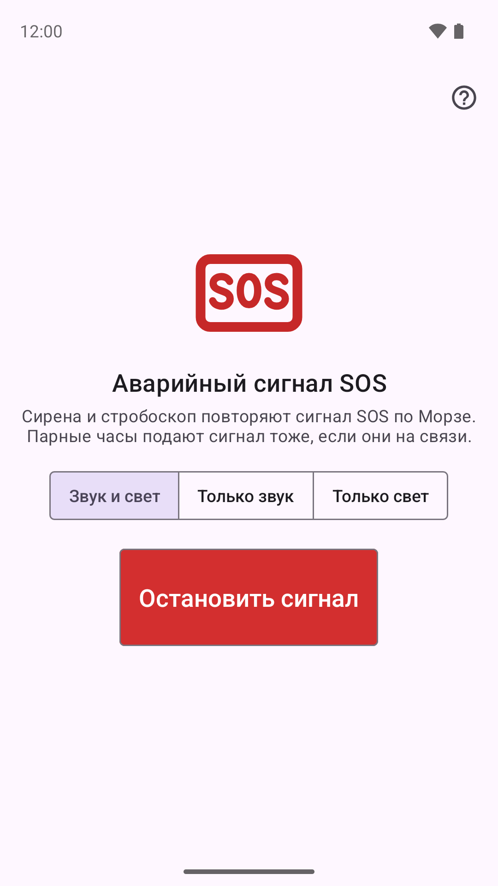
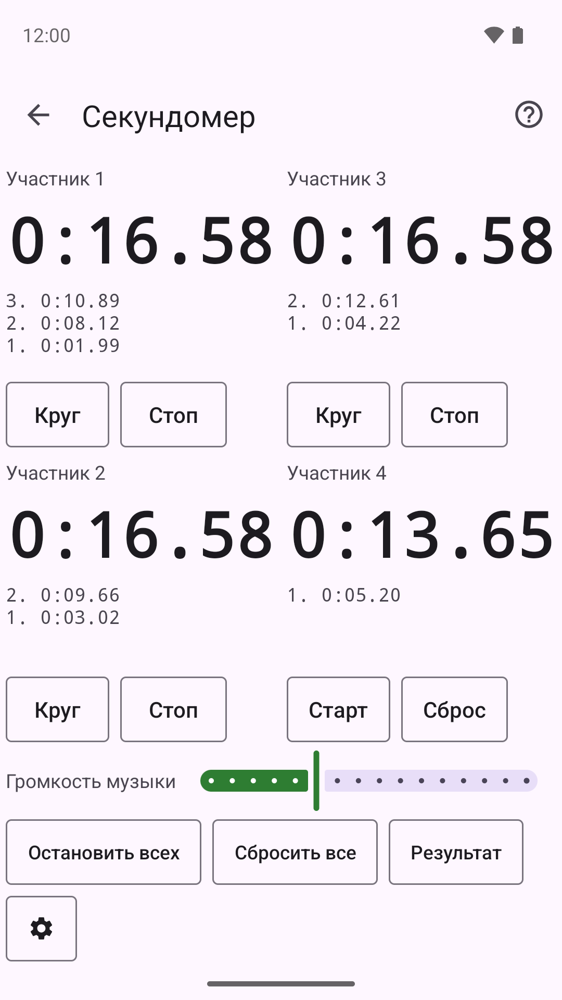
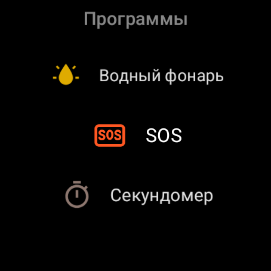

Проверьте, куда вы идёте
Откройте панель: плитка с компасом и вашим направлением, затем скорость, высота, координаты, спутники, восход и закат, шаги, пройденное расстояние и погода в вашем месте.
Tourist
Набор для похода на Android и Wear OS
Одно приложение на телефоне и часах: панель с показаниями датчиков, сирена и стробоскоп, которые доходят до сопряжённых часов, и фонарик, который не выключить мокрым касанием.
Tourist - набор для похода на телефоне Android и часах Wear OS. Он для вас, когда вы идёте по тропе один или с группой и хотите держать направление, свет и сигнал SOS в одном месте.
Откройте панель: плитка с компасом и вашим направлением, затем скорость, высота, координаты, спутники, восход и закат, шаги, пройденное расстояние и погода в вашем месте.
Одна кнопка включает сирену и стробоскоп азбукой Морзе на телефоне и на сопряжённых часах. Она не отправляет SMS и не звонит.
Водный фонарь - полноэкранный свет, который не выключить мокрым касанием. Выключается клавишей громкости. Это блокировка касаний, а не водонепроницаемость.
Секундомер на одного, двух или четырёх участников с кругами у каждого и итогом, которым можно поделиться.




Tourist - программа с открытым исходным кодом под лицензией MIT. Исходный код приложения для телефона, приложения для Wear OS и циферблата открыт.
Главная плитка - компас с вашим направлением, дальше скорость, высота, координаты, спутники, восход и закат, шаги и темп, пройденное расстояние с набором и сбросом высоты и погода в вашем месте. Если в телефоне есть барометр, плитка магнитного поля показывает давление воздуха в миллибарах, а плитка гироскопа рисует трёхмерный телефон, который поворачивается вместе с вашим.
Кнопки внизу открывают карту, отправляют вашу позицию текстом, сбрасывают дистанцию и открывают SOS.
Одна кнопка включает громкую сирену и яркий стробоскоп азбукой Морзе. Сигнал, запущенный на телефоне, запускается и на сопряжённых часах, и наоборот, чтобы люди рядом могли вас найти. Выберите звук и свет, только звук или только свет.
SOS звучит, мигает и доходит до сопряжённого устройства. Он не отправляет SMS и не звонит.
Водный фонарь - полноэкранный свет, который не выключить мокрым касанием: дождь, снег или мокрая перчатка оставляют его включённым. Выключается он осознанным нажатием клавиши.
Это блокировка касаний, а не водонепроницаемость. Перед включением света Android просит закрепить приложение.
Экранный свет любого цвета, вспышка камеры как фонарик, виджеты на главном экране и ярлык в шторке уведомлений.
Секундомер на одного, двух или четырёх участников с кругами и итогами, музыка по вашему выбору, пока он идёт, и виджет на главном экране. На часах он продолжает идти как текущее действие.
Приложение для Wear OS приносит на запястье SOS, водный фонарь и секундомер - с телефоном рядом или без него. Циферблат Tourist - отдельный пакет для часов.
Руководство разбирает инструменты по одной задаче. Поддержка говорит, куда обратиться и что указать. Политика конфиденциальности перечисляет, что приложения читают, хранят и отправляют. Справка также встроена в каждый экран приложения для телефона и работает без сети.
Разработчик не получает никаких ваших данных. Политика конфиденциальности перечисляет каждое разрешение и единственный запрос, который покидает телефон: запрос погоды к Open-Meteo.
Tourist - программа с открытым исходным кодом под лицензией MIT. Читайте код, следите за изменениями или создайте обращение в репозитории.